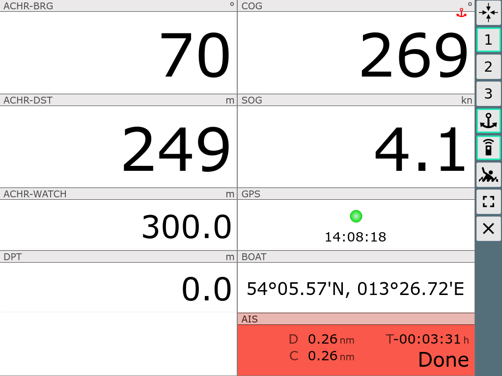
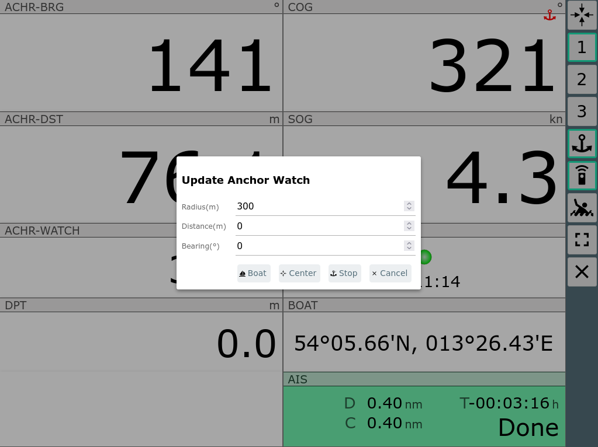

Über den Button (000) auf der Start-Seite oder einen Klick auf die Position (rechts unten) auf der Navi-Seite gelangt man zu einer Anzeige der GPS-Daten ohne Karte.
Im Layout können bis zu 5 solcher Seiten mit verschiedenen Anzeigen konfiguriert werden.
| Icon | Name | Funktion |
| GpsCenter | Zentriere Karte auf den Wegpunkt und zurück zur vorigen Seite | |
| 1,2,... | Gps1, Gps2, ... | Auswahl des anzuzeigenden Dashboards. Die Konfiguration kann durch Auswahl eines Layouts oder Anpassung mit dem Layout Editor geschehen. |
| AnchorWatch | Aktivieren der Ankerwache, siehe unten | |
| FullScreen | Fullscreen ein/aus (nur auf unterstützten Browsern) | |
| MOB | Mann über Bord (siehe Hauptseite) | |
| Overflow |
Zeige eine zweite Liste von Buttons falls der Bildschirm zu klein
für alle Buttons ist. Nur sichtbar, wenn unter Settings/Layout nicht
"2 Button columns" ausgewählt ist |
|
| Dim |
Dim Mode. Der Bildschirm wird abgedunkelt und alle Buttons werden
inaktiv. Aufheben des Zustandes über Click auf eine beliebige Stelle
auf dem Bildschirm. Der Button ist nur unter Android oder bei Nutzung des BonjourBrowsers (Version 1.5) sichtbar. Es wird dann auch der Bildschirm insgesamt gedimmt. Darüber kann der Stromverbrauch bei Nicht-Nutzung verringert werden - oder eine Überlast bei großer Helligkeit und hohen Temperaturen vermieden werden. |
|
| Cancel | Zurück zur vorigen Seite |
Ein Klick auf die Anzeige des nächsten AIS-Zieles (rechts unten) führt zur AIS-Seite, ein Klick auf jede andere Stelle oder den Cancel-Button zurück zur Seite von der man kam.
Durch Klick auf den  Button wird die Ankerwache aktiviert.
Button wird die Ankerwache aktiviert.
Im Dialog kann ausgewählt werden, ob als Anker-Position die Bootsposition oder alternativ der Kartenmittelpunkt gewählt werden soll. Ausserdem kann die zulässige Entfernung zur Ankerposition (Radius) und optional noch ein Offset zur aktuellen Position festgelegt werden (so kann man z.B. die Länge der Ankerkette und die Richtung in der sie liegt, mit berücksichtigen).
Nach Aktivierung bekommt der  Button einen grünen Rand und die Überwachung
startet. Bei Überschreiten der Entfernung wird ein Alarm ausgelöst.
Ausserdem erfolgt auch eine Alarmierung, wenn während der Ankerwache das
GPS Signal ausfällt. Die Überwachung erfolgt dabei auf dem Server, d.h. es
muss kein aktives Display verbunden sein. Voraussetzung ist natürlich, das
auf dem Server eine Sound-Ausgabe möglich (und konfiguriert) ist.
Button einen grünen Rand und die Überwachung
startet. Bei Überschreiten der Entfernung wird ein Alarm ausgelöst.
Ausserdem erfolgt auch eine Alarmierung, wenn während der Ankerwache das
GPS Signal ausfällt. Die Überwachung erfolgt dabei auf dem Server, d.h. es
muss kein aktives Display verbunden sein. Voraussetzung ist natürlich, das
auf dem Server eine Sound-Ausgabe möglich (und konfiguriert) ist.
Die Ankerwache kann auch nach einem Klick auf die Anzeigen links unten auf der Navigationsseite aktiviert werden.
Mit aktiver Ankerwache ändern einige Dashboard Seiten ihren Inhalt.

Since 20240520: When the anchor watch is active the small red anchor
icon will be shown on all pages.
By clicking the small red anchor icon or the active anchor
button an edit dialog for the anchor watch will be brought up.

You can modify or end the anchor watch at this dialog. With Cancel you continue the watch.